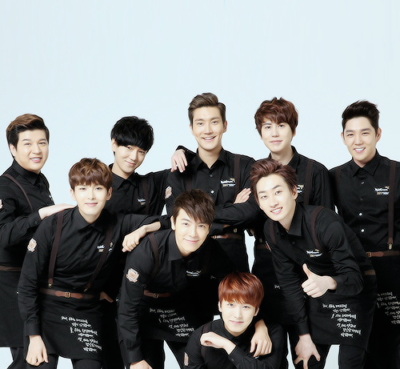
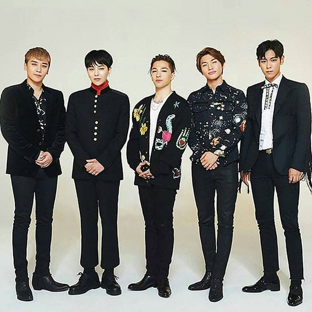
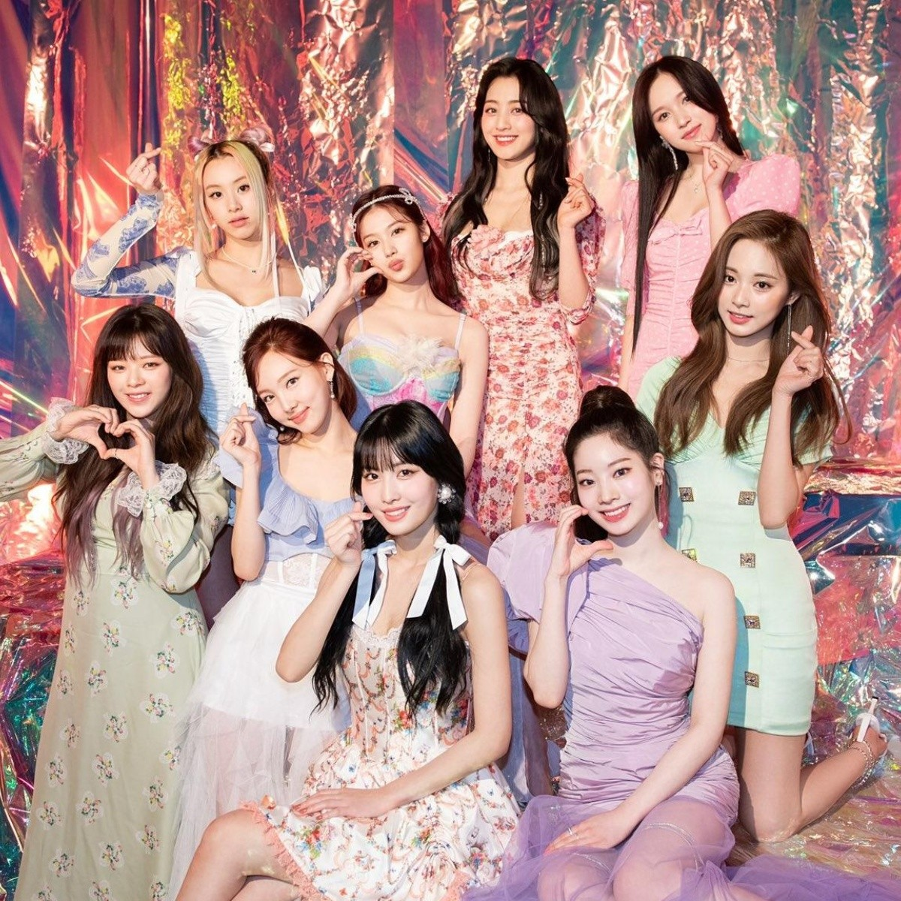
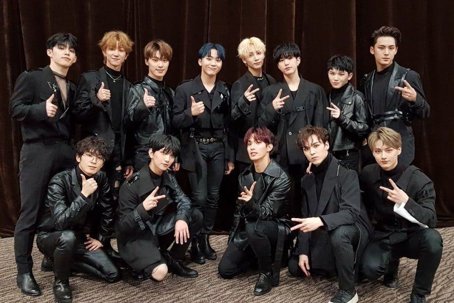
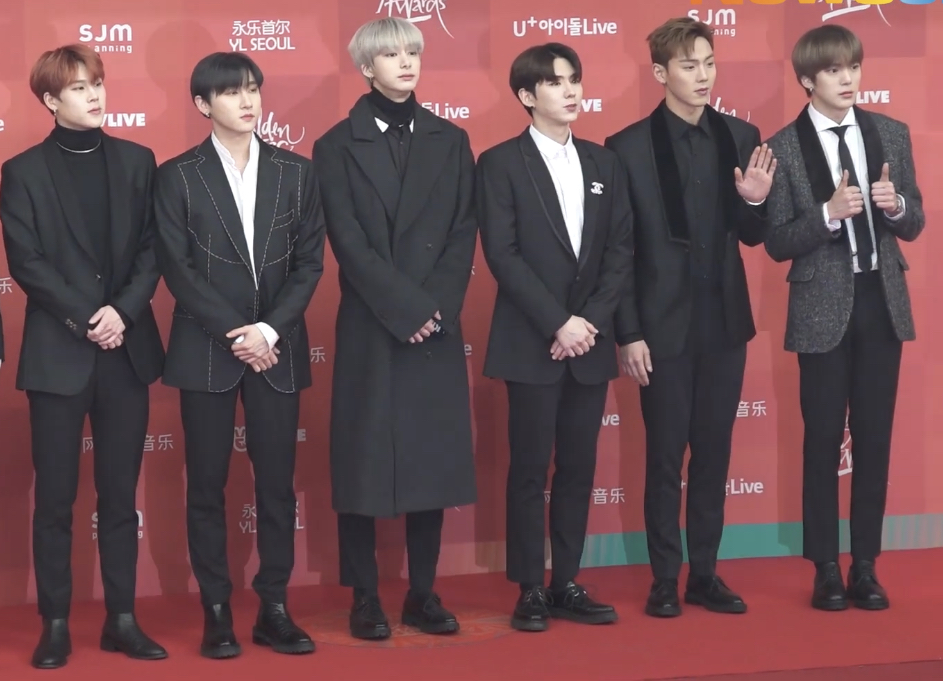
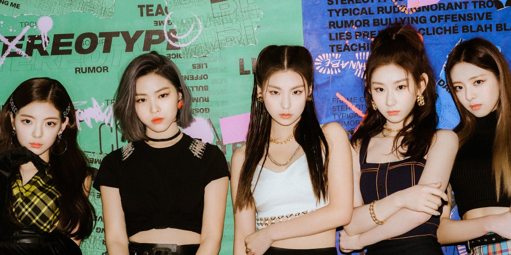

Grpos mas famosos del Kpop
El Kpop ha logrado que la cultura coreana rompa cualquier tipo de frontera y se popularicen muchas de estas agrupaciones, pero ¿Cuáles son los gripos de Kpop mas famosos?
Hoy en día y después de más de 20 años del Kpop se han conformado muchísimas bandas de este género surcoreano, algunas siguen activas y otras tristemente se han retirado la industria del Kpop. Sin embargo aquí te traigo una lista con los grupos de kpop mas famosos al rededor del mundo.
1. BTS |
|
El grupo de Kpop que debutó en 2013 BTS "Bangatang Sonyeondan", ha cultivado éxito, importancia y popularidad en la industria del Kpop, es el grupo más famoso en el mundo con su gran fandom "ARMY" que se encuentra en todas partes. Sin duda este grupo conformado por 7 chicos se ha ganado el corazón de millones de personas. ¡Te invito a que escuches sus canciones! "Click aquí" |
2. BLACKPINK |
 |
|
El Kpop femenino está representado por una de las bandas más populares "BLACKPINK" este grupo que debutó en 2016 a ganado fama mundial con sus éxitos mundiales como "How You Like That" o "Kill This Love", sin duda es uno de los grupos mas populares del Kpop. ¡Te invito a que escuches sus canciones! "Click aquí" |
3. SUPER JUNIOR |
|  |
|
Hoy en día este grupo cuenta con solo 9 miembros activos, pero E.L.F. sigue apoyando a la banda como desde un inicio. El grupo debutó en el 2005 y se ha mantenido en actividad, por ello ha conseguido fans de todas partes del mundo.¡Te invito a que escuches sus canciones!"Click aquí" |
4. EXO |
|
Su debut oficial fue el 8 de abril de 2012 con el lanzamiento del sencillo «Mama» del EP homónimo. Una banda creada por SM Entertainment En 2013, saltó a la fama al lanzar su primer álbum de estudio, XOXO, y el exitoso sencillo «Growl», vendiendo más de dos millones de copias digitales de la canción solo en Corea del Sur. Es un grupo muy famoso acompañado de éxitos. ¡Te invito a que escuches sus canciones! "Click aquí" |
5. BIGBANG |
|  |
|
Este grupo de Kpop que debutó con 5 miembros el 19 de agosto de 2006 lograron su primer éxito en Corea en 2007 con la canción «Lies», ha ganado mucho éxito a lo largo del tiempo e incluso ha sido reconocido a nivel mundial por sus solistas como G-Dragon. ¡Te invito a escuchar sus canciones! "Click aquí" |
6. TWICE |
|  |
|
Las chicas de TWICE han trabajado con mucho esfuerzo para conseguir reconocimiento mundial y lo han conseguido por el gran talento de sus integrantes. TWICE junto a su fandom ONCE pueden vencer cualquier reto que se propongan. ¡Te invito a que escuches sus canciones! "Click aquí" |
7. STRAY KIDS |
|
Es un grupo surcoreano de ocho integrantes formado en 2017 por JYP Entertainment, desde entonces ha logrado encantar a mucha gente en todo el mundo haciendolos ganar mucha importancia y fama. Con su gran fandom STAY que se encuentra en toos los países del mundo celebran su nuevo álbum NO EASY. ¡Te invito a que escuches sus canciones! "Click aquí" |
8. SEVENTEEN |
|  |
|
Es un grupo musical surcoreano formado en el 2012 y que debutó en el año 2015 bajo la compañía Pledis Entertainment que desde entonces ha ido acumulando éxitos tras éxitos obteniendo fans en todo el mundo, su fandom se llama CARAT. ¡Te invito a que escuches canciones! "Click aquí" |
9. MONSTA X |
|  |
|
Es una boy band surcoreana formada por la agencia Starship Entertainment en 2015, este grupo ha deleitado a muchas personas alrededor del mundo, siendo así un grupo con mucha fama y popularidad. ¡Te invito a que escuches sus canciones! "Click aquí" |
10. ITZY |
|  |
|
Es un girl group surcoreano formado por la agencia JYP Entertainment en 2019. El grupo debutó el 12 de febrero de ese año con el lanzamiento del sencillo en CD, It'z Different y la canción principal «Dalla Dalla». Estas chicas han conquistado a las personas con su M/V de WANNABE, que las ha hecho muy famosas y populares en el mundo del Kpop, sin duda son muy talentosas. ¡Te invito a que escuches sus canciones! "Click aquí" |